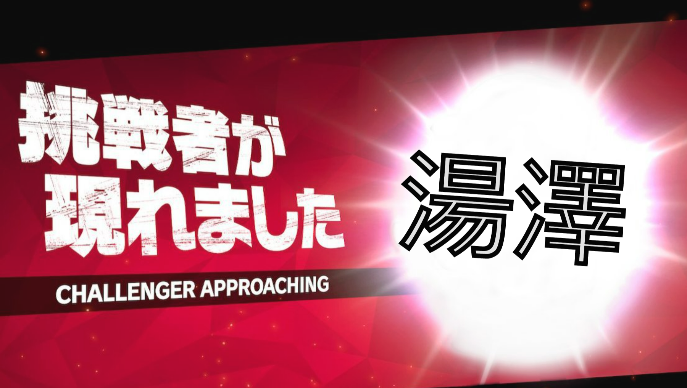
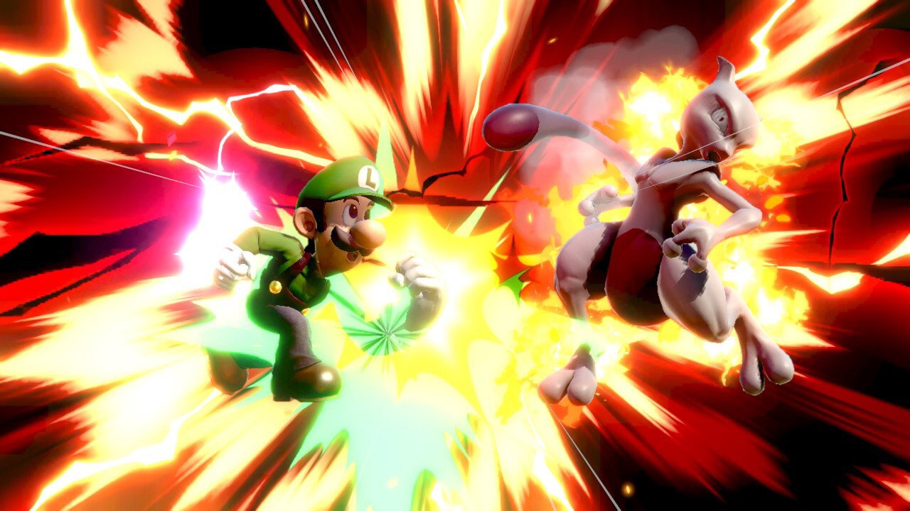
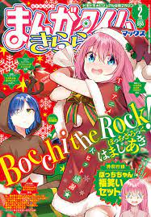
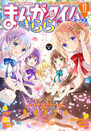

ゲーム

主にやっているのはスマブラです。大会もたまに出てます。
スマブラ強くなりたい人のために、書きました。良ければご覧くださいこちらをどうぞ

プレイ済み作品
- POKEMON
- Drangon Quest
- FF
余談ですが,ドラクエはかつて海外では[Dragon Warriares]と呼ばれていた(今はDragon Quest)
きらら
にわかですが、きららのおっかけもやってます
ざっと説明させていただきます
きららとは
芳文社により、2003年に刊行されました
最初に創刊されたのはまんがタイムきらら、その次にまんがタイムきららフォワードが創刊されました。
その後も数々の創刊と休刊を繰り返し、現在は3つの姉妹誌を含め
- まんがタイムきらら（2003）
- まんがタイムきららフォワード(2005)
- まんがタイムきららMAX(2012)
- まんがタイムきららキャラット(2015)
の4つの系列を媒体に定期刊行されています
とはいえあまり聞きなじみのない言葉だと思うので、いくつか例を上げさせていただくと
以下、敬称略
最近アニメ化され、双方の界隈に大旋風を巻き起こしたぼっち・ざ・ろっく(作：はまじあき)
心がぴょんぴょんしてしまうような日常を描くご注文はうさぎですか？(作：koi)
約15年前に引き起こされたオタクブームを加速化させた、伝説の作品ともいえるけいおん(作:かきふらい)
など、有名どころになりますが、
これらの作品はまんがタイムきらら系列から出版されています